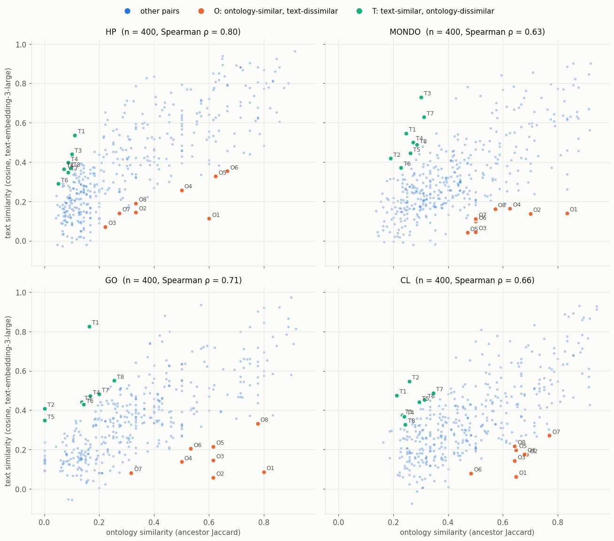

Where Ontology Similarity and Text-Embedding Similarity Disagree
For a sample of term pairs in each of several ontologies, we compute two similarities:
ontology similarity: Jaccard similarity of the two terms’
is_aancestor sets (theclosuremodel in OAK);text similarity: cosine similarity of the terms’ LLM embeddings, as served by OLS.
Most pairs fall along a common trend. The interesting cases are in the corners, where the two measures disagree:
ontology-similar, text-dissimilar: terms that are close in the hierarchy but described in different words (e.g. synonyms the model doesn’t know, or terms grouped by a logical criterion that their names don’t reflect);
text-similar, ontology-dissimilar: terms that read alike but are classified far apart (e.g. a shared word with different meanings, or the same concept modelled in two places, which may point to a modelling problem in the ontology).
[1]:
import warnings
warnings.filterwarnings("ignore", category=UserWarning, module="eutils")
warnings.filterwarnings("ignore", category=DeprecationWarning)
import matplotlib.pyplot as plt
import seaborn as sns
# reference palette (categorical slots in fixed order; sequential blue ramp)
BLUE, ORANGE, AQUA = "#2a78d6", "#eb6834", "#1baf7a"
INK, INK2, GRID, SURFACE = "#0b0b0b", "#52514e", "#e4e3df", "#fcfcfb"
plt.rcParams.update({
"figure.facecolor": SURFACE, "axes.facecolor": SURFACE, "savefig.facecolor": SURFACE,
"axes.edgecolor": GRID, "axes.labelcolor": INK2, "axes.titlecolor": INK,
"axes.grid": True, "grid.color": GRID, "grid.linewidth": 0.6,
"axes.spines.top": False, "axes.spines.right": False,
"xtick.color": INK2, "ytick.color": INK2, "text.color": INK,
"font.size": 10, "axes.titlesize": 11, "figure.dpi": 110,
})
SEQUENTIAL = sns.blend_palette(["#f0efec", "#86b6ef", "#2a78d6", "#0d366b"], as_cmap=True)
[2]:
import random
import numpy as np
import pandas as pd
from oaklib import get_adapter
from oaklib.datamodels.vocabulary import IS_A, OWL_CLASS
MODEL = "text-embedding-3-large_pca512"
ONTOLOGIES = {"hp": "HP", "mondo": "MONDO", "go": "GO", "cl": "CL"}
N_RELATED, N_RANDOM, N_SHOW = 300, 100, 8
Sampling pairs
Purely random pairs are almost all unrelated, so they would pile up in one corner. To cover the whole range of ontology similarity, most pairs are sampled by picking a term, moving up to a random one of its ancestors, then down to a random descendant of that ancestor. A smaller number of fully random pairs is added. Only terms from the ontology’s own namespace are used (no imported terms) and obsolete terms are excluded.
[3]:
def sample_pairs(adapter, prefix, seed=0):
rng = random.Random(seed)
terms = sorted(t for t in adapter.entities(filter_obsoletes=True, owl_type=OWL_CLASS)
if t.startswith(prefix + ":"))
term_set = set(terms)
pairs = set()
while len(pairs) < N_RELATED:
a = rng.choice(terms)
ancs = [x for x in adapter.ancestors(a, predicates=[IS_A], reflexive=False) if x in term_set]
if not ancs:
continue
x = rng.choice(ancs)
descs = [d for d in adapter.descendants(x, predicates=[IS_A], reflexive=False)
if d in term_set and d != a]
if descs:
pairs.add(tuple(sorted((a, rng.choice(descs)))))
while len(pairs) < N_RELATED + N_RANDOM:
a, b = rng.sample(terms, 2)
pairs.add(tuple(sorted((a, b))))
return sorted(pairs)
adapters, pair_sets = {}, {}
for name, prefix in ONTOLOGIES.items():
adapters[name] = (get_adapter(f"sqlite:obo:{name}"), get_adapter(f"ols:{name}"))
pair_sets[name] = sample_pairs(adapters[name][0], prefix)
print(name, len(pair_sets[name]), "pairs")
hp 400 pairs
mondo 400 pairs
go 400 pairs
cl 400 pairs
Scoring
Closure vectors are computed in one call per ontology so that they share dimensions; text vectors come from OLS and are cached locally.
[4]:
from oaklib.utilities.embeddings.closure_embeddings import closure_embeddings
def most_specific_common_ancestor(adapter, a, b):
common = set(adapter.ancestors(a, predicates=[IS_A])) & set(adapter.ancestors(b, predicates=[IS_A]))
common.discard("owl:Thing")
if not common:
return None
return max(common, key=lambda c: len(list(adapter.ancestors(c, predicates=[IS_A]))))
frames = []
for name, (onto, ols) in adapters.items():
pairs = pair_sets[name]
terms = sorted({t for p in pairs for t in p})
ids, _, C = closure_embeddings(onto, terms)
cix = {t: i for i, t in enumerate(ids)}
tids, T = ols.entity_embeddings(terms, model=MODEL)
T = T / np.linalg.norm(T, axis=1, keepdims=True)
tix = {t: i for i, t in enumerate(tids)}
rows = []
for a, b in pairs:
if a not in tix or b not in tix:
continue
x, y = C[cix[a]] > 0, C[cix[b]] > 0
rows.append({"ontology": name, "a": a, "b": b,
"ontology_sim": (x & y).sum() / (x | y).sum(),
"text_sim": float(T[tix[a]] @ T[tix[b]])})
df = pd.DataFrame(rows)
# disagreement: difference of within-ontology percentile ranks
df["disagreement"] = df.ontology_sim.rank(pct=True) - df.text_sim.rank(pct=True)
frames.append(df)
print(f"{name}: {len(df)} pairs scored ({len(pairs) - len(df)} missing a text embedding)")
scores = pd.concat(frames, ignore_index=True)
hp: 400 pairs scored (0 missing a text embedding)
mondo: 400 pairs scored (0 missing a text embedding)
go: 400 pairs scored (0 missing a text embedding)
cl: 400 pairs scored (0 missing a text embedding)
The scatter plots
Each point is a pair. The disagreement score is the difference between a pair’s percentile rank under ontology similarity and its percentile rank under text similarity. The 8 most extreme pairs in each direction are highlighted and numbered; the tables below list them.
[5]:
from scipy.stats import spearmanr
ONTO_ONLY, TEXT_ONLY = ORANGE, AQUA
corners = {}
fig, axes = plt.subplots(2, 2, figsize=(12, 10.5), sharex=True, sharey=True)
for ax, (name, df) in zip(axes.flat, scores.groupby("ontology", sort=False)):
onto_only = df.nlargest(N_SHOW, "disagreement")
text_only = df.nsmallest(N_SHOW, "disagreement")
corners[name] = (onto_only, text_only)
rest = df.drop(onto_only.index.union(text_only.index))
ax.scatter(rest.ontology_sim, rest.text_sim, s=12, color=BLUE, alpha=0.35, linewidths=0)
for sub, color, tag in ((onto_only, ONTO_ONLY, "O"), (text_only, TEXT_ONLY, "T")):
ax.scatter(sub.ontology_sim, sub.text_sim, s=46, color=color, edgecolors=SURFACE, linewidths=1.5, zorder=3)
for k, (_, r) in enumerate(sub.iterrows(), 1):
ax.annotate(f"{tag}{k}", (r.ontology_sim, r.text_sim), xytext=(4, 3),
textcoords="offset points", fontsize=8, color=INK2)
rho = spearmanr(df.ontology_sim, df.text_sim).statistic
ax.set_title(f"{name.upper()} (n = {len(df)}, Spearman ρ = {rho:.2f})")
for ax in axes[-1]:
ax.set_xlabel("ontology similarity (ancestor Jaccard)")
for ax in axes[:, 0]:
ax.set_ylabel(f"text similarity (cosine, {MODEL.replace('_pca512', '')})")
handles = [plt.Line2D([], [], marker="o", linestyle="", color=c, markersize=7) for c in (BLUE, ONTO_ONLY, TEXT_ONLY)]
fig.legend(handles, ["other pairs", "O: ontology-similar, text-dissimilar", "T: text-similar, ontology-dissimilar"],
loc="upper center", ncol=3, frameon=False, bbox_to_anchor=(0.5, 1.0))
fig.tight_layout(rect=(0, 0, 1, 0.965))

The corners
For each ontology, the two tables list the most extreme disagreements. “Common ancestor” is the most specific shared is_a ancestor, which shows how far apart the ontology places the two terms.
[6]:
from IPython.display import Markdown, display
pd.set_option("display.max_colwidth", 60)
def corner_table(onto, sub, tag):
labels = dict(onto.labels(set(sub.a) | set(sub.b)))
out = []
for k, (_, r) in enumerate(sub.iterrows(), 1):
mica = most_specific_common_ancestor(onto, r.a, r.b)
out.append({
"#": f"{tag}{k}",
"term 1": f"{labels.get(r.a)} ({r.a})",
"term 2": f"{labels.get(r.b)} ({r.b})",
"ontology sim": round(r.ontology_sim, 2),
"text sim": round(r.text_sim, 2),
"common ancestor": onto.label(mica) if mica else "(none)",
})
return pd.DataFrame(out).set_index("#")
for name, (onto_only, text_only) in corners.items():
onto = adapters[name][0]
display(Markdown(f"### {name.upper()}: ontology-similar, text-dissimilar"))
display(corner_table(onto, onto_only, "O"))
display(Markdown(f"### {name.upper()}: text-similar, ontology-dissimilar"))
display(corner_table(onto, text_only, "T"))
HP: ontology-similar, text-dissimilar
| term 1 | term 2 | ontology sim | text sim | common ancestor | |
|---|---|---|---|---|---|
| # | |||||
| O1 | Contiguous gene syndrome (HP:0001466) | Imprinted (HP:0034338) | 0.60 | 0.11 | Inheritance qualifier |
| O2 | Ameliorated by (HP:0025254) | Multiple-finger involvement (HP:6001122) | 0.33 | 0.14 | Clinical modifier |
| O3 | Posterior fossa localization (HP:0430129) | Exacerbated by exposure to sunlight (HP:6001075) | 0.22 | 0.07 | Clinical modifier |
| O4 | Microscopic hematuria (HP:0002907) | Waxy casts (HP:0031202) | 0.50 | 0.26 | Abnormal urine cytology |
| O5 | Blue-field entoptic phenomenon (HP:0020331) | Difficulty adjusting to changes in luminance (HP:0030512) | 0.62 | 0.33 | Abnormality of vision |
| O6 | Conus terminalis arteriovenous malformation (HP:0031939) | Spinal cord granuloma (HP:6000257) | 0.67 | 0.35 | Abnormal spinal cord morphology |
| O7 | Exercise-triggered malignant hyperthermia (HP:0034732) | Mucus in stool (HP:6000686) | 0.27 | 0.14 | Abnormality of metabolism/homeostasis |
| O8 | Tapered tooth (HP:0033781) | Lip hyperpigmentation (HP:0100816) | 0.33 | 0.19 | Abnormal oral morphology |
HP: text-similar, ontology-dissimilar
| term 1 | term 2 | ontology sim | text sim | common ancestor | |
|---|---|---|---|---|---|
| # | |||||
| T1 | Undermodelled hand bones (HP:0004292) | Complete duplication of the proximal phalanx of the 3rd ... | 0.11 | 0.54 | Abnormality of limbs |
| T2 | Absent phalangeal crease (HP:0006109) | Unilateral perisylvian polymicrogyria (HP:0032406) | 0.07 | 0.37 | Phenotypic abnormality |
| T3 | Almond-shaped palpebral fissure (HP:0007874) | Congruous homonymous hemianopia (HP:0030518) | 0.10 | 0.44 | Phenotypic abnormality |
| T4 | Abnormal stapes morphology (HP:0008628) | Fractured carpal bone (HP:0041248) | 0.09 | 0.40 | Phenotypic abnormality |
| T5 | Abnormality of the periorbital region (HP:0000606) | Carpal bone aplasia (HP:0004231) | 0.07 | 0.36 | Phenotypic abnormality |
| T6 | Short middle phalanx of the 2nd toe (HP:0010435) | Abnormal hypopharynx morphology (HP:3000053) | 0.05 | 0.29 | Phenotypic abnormality |
| T7 | Premature adrenarche (HP:0012412) | Preterm intraventricular hemorrhage (HP:0030747) | 0.09 | 0.35 | Phenotypic abnormality |
| T8 | Cholestatic liver disease (HP:0002611) | Choroidal hemangioma (HP:0007872) | 0.10 | 0.37 | Phenotypic abnormality |
MONDO: ontology-similar, text-dissimilar
| term 1 | term 2 | ontology sim | text sim | common ancestor | |
|---|---|---|---|---|---|
| # | |||||
| O1 | monosodium glutamate sensitivity (MONDO:0009280) | Lamb-Shaffer syndrome (MONDO:0014778) | 0.83 | 0.14 | hereditary disease |
| O2 | autism, susceptibility to, 20 (MONDO:0030004) | gallbladder disease 4 (MONDO:1010151) | 0.70 | 0.14 | inherited disease susceptibility |
| O3 | fat necrosis of breast (MONDO:0001101) | intellectual disability, anterior maxillary protrusion, ... | 0.50 | 0.04 | human disease |
| O4 | maleylacetoacetate isomerase deficiency (MONDO:0060527) | immunodeficiency 109 with lymphoproliferation (MONDO:085... | 0.62 | 0.16 | hereditary disease |
| O5 | fire ant poisoning (MONDO:0100341) | OFD1-related ciliopathy (MONDO:1040039) | 0.47 | 0.04 | disease by etiologic mechanism |
| O6 | dilated cardiomyopathy 2A (MONDO:0012746) | 46,XY sex reversal 6 (MONDO:0013410) | 0.50 | 0.10 | familial cardiomyopathy |
| O7 | otosclerosis 8 (MONDO:0012797) | Giacheti syndrome (MONDO:0013037) | 0.50 | 0.11 | hereditary disease |
| O8 | immunoglobulin M deficiency, horse (MONDO:1012135) | spermatic cord varicoele, non-human animal (MONDO:1017019) | 0.57 | 0.16 | disease by body system or component, non-human animal |
MONDO: text-similar, ontology-dissimilar
| term 1 | term 2 | ontology sim | text sim | common ancestor | |
|---|---|---|---|---|---|
| # | |||||
| T1 | malignant thyroid stimulating hormone producing neoplasm... | functional pancreatic neuroendocrine tumor (MONDO:0023206) | 0.25 | 0.55 | functioning endocrine neoplasm |
| T2 | ampulla of vater mucinous adenocarcinoma (MONDO:0002736) | diffuse cavernous hemangioma of the rectum (MONDO:0022985) | 0.19 | 0.42 | intestinal neoplasm |
| T3 | non-keratinizing sinonasal squamous cell carcinoma (MOND... | maxillary sinus adenocarcinoma (MONDO:0004328) | 0.30 | 0.73 | nasal cavity and paranasal sinus carcinoma |
| T4 | endobronchial lipoma (MONDO:0000961) | lipid-rich breast carcinoma (MONDO:0021090) | 0.27 | 0.50 | neoplasm |
| T5 | childhood embryonal testis carcinoma (MONDO:0003788) | transitional cell carcinoma of the corpus uteri (MONDO:0... | 0.26 | 0.44 | reproductive system cancer |
| T6 | adrenocortical carcinoma, hereditary (MONDO:0008734) | squamous cell carcinoma of the small intestine (MONDO:00... | 0.23 | 0.37 | carcinoma |
| T7 | childhood immature teratoma of ovary (MONDO:0004082) | childhood central nervous system germinoma (MONDO:0004452) | 0.31 | 0.63 | malignant childhood germ cell neoplasm |
| T8 | spinal cord lipoma (MONDO:0001790) | diffuse intrinsic pontine glioma (MONDO:0006033) | 0.29 | 0.49 | central nervous system neoplasm |
GO: ontology-similar, text-dissimilar
| term 1 | term 2 | ontology sim | text sim | common ancestor | |
|---|---|---|---|---|---|
| # | |||||
| O1 | perikaryon (GO:0043204) | extrahaustorial matrix (GO:0085036) | 0.80 | 0.09 | cellular anatomical structure |
| O2 | meiotic spindle pole (GO:0090619) | vascular endothelial glycocalyx (GO:0120239) | 0.62 | 0.06 | cellular anatomical structure |
| O3 | ground meristem histogenesis (GO:0010066) | style development (GO:0048479) | 0.62 | 0.15 | plant gross anatomical part developmental process |
| O4 | catecholamine uptake (GO:0090493) | migracytosis (GO:0140495) | 0.50 | 0.14 | transport |
| O5 | secondary cell wall (GO:0009531) | basal ring of apical complex (GO:0020032) | 0.62 | 0.22 | cellular anatomical structure |
| O6 | Nebenkern (GO:0016006) | apoplast (GO:0048046) | 0.53 | 0.20 | cellular anatomical structure |
| O7 | protein-phosphoribosyl dephospho-coenzyme A linkage (GO:... | fractalkine production (GO:0032603) | 0.32 | 0.08 | macromolecule metabolic process |
| O8 | L-galactose dehydrogenase activity (GO:0010349) | prostaglandin F synthase activity (GO:0047017) | 0.78 | 0.33 | oxidoreductase activity, acting on the CH-OH group of do... |
GO: text-similar, ontology-dissimilar
| term 1 | term 2 | ontology sim | text sim | common ancestor | |
|---|---|---|---|---|---|
| # | |||||
| T1 | negative regulation of dendritic spine development (GO:0... | positive regulation of dendritic spine morphogenesis (GO... | 0.16 | 0.83 | regulation of dendritic spine development |
| T2 | integrin alpha9-beta1 complex (GO:0034679) | negative regulation of fibronectin-dependent thymocyte m... | 0.00 | 0.41 | (none) |
| T3 | protein localization to linear element (GO:0036181) | positive regulation of protein localization to presynaps... | 0.14 | 0.44 | biological_process |
| T4 | UDP-N-acetylglucosamine transmembrane transporter activi... | 2,3,4,5-tetrahydropyridine-2,6-dicarboxylate N-succinylt... | 0.17 | 0.47 | molecular_function |
| T5 | azurophil granule membrane (GO:0035577) | negative regulation of lysosomal membrane permeability (... | 0.00 | 0.35 | (none) |
| T6 | isocitrate-homoisocitrate dehydrogenase activity (GO:003... | negative regulation of catalytic activity (GO:0043086) | 0.14 | 0.43 | process |
| T7 | protein-N(PI)-phosphohistidine-trehalose phosphotransfer... | galactosamine-6-phosphate isomerase activity (GO:0043877) | 0.20 | 0.48 | catalytic activity |
| T8 | positive regulation of antibacterial peptide secretion (... | positive regulation of defense response to oomycetes (GO... | 0.25 | 0.55 | positive regulation of defense response |
CL: ontology-similar, text-dissimilar
| term 1 | term 2 | ontology sim | text sim | common ancestor | |
|---|---|---|---|---|---|
| # | |||||
| O1 | olfactory ensheathing cell (CL:0011028) | Astro-NT NN_1 Slc36a2 astrocyte (Mmus) (CL:4307029) | 0.65 | 0.06 | glial cell |
| O2 | type 1 myenteric plexus glia (CL:4047042) | OEC NN_1 Gdpd4 olfactory ensheathing cell (Mmus) (CL:430... | 0.69 | 0.17 | glial cell |
| O3 | totipotent stem cell (CL:0000052) | airway submucosal gland duct basal cell (CL:4033024) | 0.64 | 0.14 | somatic stem cell |
| O4 | melanophage (CL:0002060) | CD8-alpha-positive plasmacytoid dendritic cell (CL:0002456) | 0.68 | 0.18 | mononuclear phagocyte |
| O5 | forebrain radial glial cell (CL:0013000) | OEC NN_1 Rasgef1c olfactory ensheathing cell (Mmus) (CL:... | 0.65 | 0.20 | glial cell |
| O6 | cone retinal bipolar cell (CL:0000752) | hypothalamic gonadotropin-releasing hormone neuron (Mmus... | 0.48 | 0.08 | glutamatergic neuron |
| O7 | glycocalyx secreting cell (CL:0000660) | prostate stromal cell (CL:0002622) | 0.77 | 0.27 | stromal cell |
| O8 | single fate stem cell (CL:0000035) | airway submucosal gland duct basal cell (CL:4033024) | 0.64 | 0.22 | somatic stem cell |
CL: text-similar, ontology-dissimilar
| term 1 | term 2 | ontology sim | text sim | common ancestor | |
|---|---|---|---|---|---|
| # | |||||
| T1 | olfactory receptor cell (CL:0000207) | extraglomerular mesangial cell (CL:0002173) | 0.21 | 0.47 | eukaryotic cell |
| T2 | somatotropin secreting cell (CL:0000295) | hypothalamic gonadotropin-releasing hormone neuron (CL:0... | 0.26 | 0.55 | secretory cell |
| T3 | glandular epithelial cell of endometrium (CL:0009084) | type 1 vestibular sensory cell of stato-acoustic epithel... | 0.23 | 0.37 | eukaryotic cell |
| T4 | malignant cell (CL:0001064) | inner phalangeal cell (CL:0005015) | 0.24 | 0.37 | cell |
| T5 | acidophil cell of pars distalis of adenohypophysis (CL:0... | epididymis secretory cell (CL:1001590) | 0.29 | 0.44 | secretory epithelial cell |
| T6 | glomerular capillary endothelial cell (CL:1001005) | kidney loop of Henle thin ascending limb epithelial cell... | 0.31 | 0.45 | kidney cortical cell |
| T7 | myoepithelial cell of trachea gland (CL:4033021) | stomach smooth muscle circular layer cell (CL:4047036) | 0.35 | 0.49 | contractile cell |
| T8 | thyrotroph (CL:0000476) | enterocyte of epithelium of small intestine (CL:1000334) | 0.24 | 0.33 | columnar/cuboidal epithelial cell |
What the corners show
The two measures agree on the broad picture (Spearman ρ 0.63 to 0.80). The corners contain three different kinds of disagreement, and only one of them is a failure of the text embeddings.
1. Artifacts of ancestor-set Jaccard. Many “ontology-similar, text-dissimilar” pairs sit in shallow parts of an ontology, where two unrelated terms share most of their few ancestors:
HP clinical modifiers and inheritance qualifiers (Contiguous gene syndrome / Imprinted, Jaccard 0.60);
GO cellular components that meet only at cellular anatomical structure (perikaryon / extrahaustorial matrix, 0.80);
MONDO diseases grouped only as hereditary disease (monosodium glutamate sensitivity / Lamb-Shaffer syndrome, 0.83).
In these cases the text model is right that the terms are unrelated. The reverse artifact appears in deep polyhierarchies such as MONDO neoplasms. There, terms with a fairly specific common ancestor still get a low Jaccard because each has many other ancestors; for example, the two sinonasal carcinomas in MONDO T3 (Jaccard 0.30, text 0.73). Using only is_a also matters for GO and CL, where much of the structure is in part_of.
2. Knowledge that only the ontology has. Some pairs are related in a way that their names don’t reveal:
Microscopic hematuria / Waxy casts (both abnormal urine cytology);
melanophage / CD8-alpha-positive plasmacytoid dendritic cell (both mononuclear phagocytes);
L-galactose dehydrogenase activity / prostaglandin F synthase activity (both oxidoreductases acting on CH-OH groups);
glial cells with taxonomy-style labels such as Astro-NT NN_1 Slc36a2 astrocyte (Mmus), which give the text model very little to work with.
3. Text similarity without meaning. The clearest text failures are in the “text-similar, ontology-dissimilar” corner:
polarity: negative regulation of dendritic spine development vs positive regulation of dendritic spine morphogenesis has a text similarity of 0.83, one of the highest in the GO sample;
shared vocabulary on a different axis: tumours that share a histology or a body site but not both (MONDO), and cell types that share words like secreting or epithelial (CL).
In HP, the text-similar corner only reaches modest text similarity (at most 0.54), so in this sample HP has few strong conflicts of this kind.
Using this. Disagreement corners are a cheap way to find candidates for curation review in either direction: terms whose classification may be missing a link (text-similar but far apart), and labels that may be too cryptic to search for (ontology-similar but text-dissimilar). For a fairer comparison, replace Jaccard with an IC-based measure, add part_of to the closure predicates (hp.closure_embedding_predicates), or try another text model by changing MODEL. Vectors are cached, so
re-runs only fetch new terms.